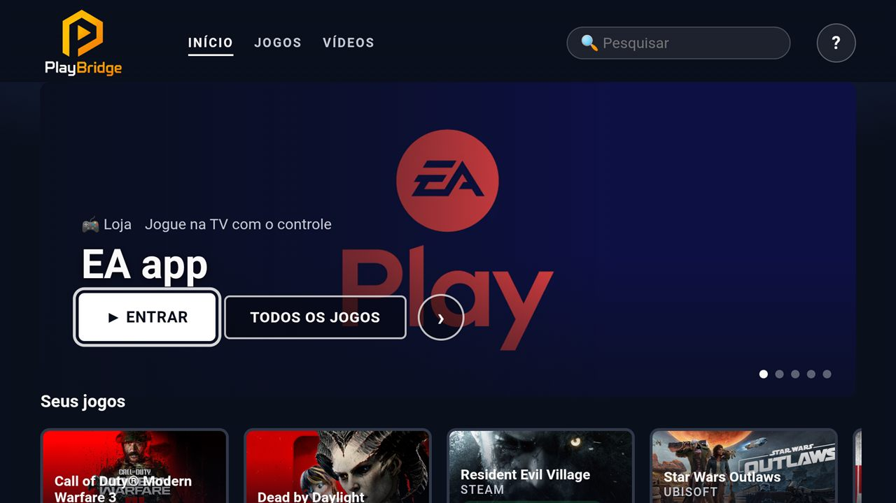

Os jogos e vídeos do seu computador na TV
Jogue na TV com o controle, do sofá, enquanto outra pessoa continua usando o computador normalmente. E assista aos seus filmes e séries do PC na tela grande.
Baixar para WindowsWindows 10 e 11 · 111 MB · instalação em poucos minutos

Seus jogos na TV
Steam, Epic, EA, Ubisoft e Xbox: o jogo roda no computador e aparece na TV, com o controle de Xbox ou PlayStation.
O PC continua livre
O jogo abre numa tela invisível. Quem está no computador não vê nada mudar e segue trabalhando.
Seus vídeos, do seu jeito
Filmes, séries e vídeos do computador organizados como num app de streaming, com "continuar assistindo".
Como funciona
São três passos, uma vez só. Você não precisa de técnico nem de cabo: o próprio PlayBridge vai mostrando o que fazer.
Baixe e instale no computador
Clique em Baixar para Windows, abra o arquivo baixado, aceite os termos de uso e clique em Instalar. O resto é sozinho.
Coloque o app na TV
No fim da instalação, o computador abre um passo a passo para o seu tipo de TV. Na TV, você instala o app grátis Downloader, digita o endereço que aparece no computador e pronto: o PlayBridge vai para a TV.
Ligue o controle e jogue
Conecte o controle de videogame na TV pelo Bluetooth, escolha um jogo e aperte OK. Para ver os vídeos, coloque os arquivos na pasta Vídeos › PlayBridge do computador.
Em quais TVs funciona
O app da TV do PlayBridge roda nos aparelhos com Android por dentro. Veja como está cada um hoje:
Fire TV
Fire TV Stick 4K. Os outros modelos (Stick, Stick Lite, 4K Max, Cube) usam o mesmo sistema.
Google TV
Chromecast com Google TV e TVs com Google TV.
Android TV e TV box
TVs Sony, TCL, Philips, Xiaomi e outras com Android TV; TV box Android como a Mi Box.
Samsung, LG, Roku e Apple TV
Usam outros sistemas e precisam de um app próprio. Por enquanto, ligue uma Fire TV ou um Chromecast na TV.
O que você precisa
Para os vídeos, qualquer computador com Windows serve. Para os jogos, o computador precisa de uma placa de vídeo.
- Computador com Windows 10 ou 11 (64 bits)
- Uma TV com Android por dentro: Fire TV, Google TV, Android TV ou TV box Android (veja a lista acima)
- TV e computador na mesma internet de casa
- Controle de Xbox ou PlayStation com Bluetooth, para os jogos
- Placa de vídeo para jogar: NVIDIA GTX 900 ou mais nova, AMD RX 400 ou mais nova, ou Intel de 6ª geração em diante
- Cabo de rede no computador (opcional): assim a TV consegue ligar o computador
Perguntas
Quem está usando o computador vê o jogo?
Não. O jogo abre numa tela invisível, só para a TV. O monitor do computador continua do jeito que estava.
O computador precisa ficar ligado?
Sim, os jogos e vídeos estão nele. Se ele estiver no cabo de rede, a própria TV pode ligá-lo: é só apertar "Ligar o computador" no PlayBridge.
O PlayBridge baixa filmes ou jogos?
Não. Ele mostra na TV o que você já tem no computador: os jogos das suas lojas (Steam, Epic, EA, Ubisoft, Xbox) e os seus vídeos.
Meus vídeos vão para a internet?
Não. Tudo fica na sua casa: o computador manda os vídeos e os jogos para a TV pela rede de casa.
Como desinstalar?
Como qualquer programa: Configurações do Windows › Aplicativos › PlayBridge › Desinstalar. Seus vídeos não são apagados.
Pronto para jogar no sofá?
Baixe agora e siga o passo a passo que o PlayBridge mostra.
Baixar para Windows